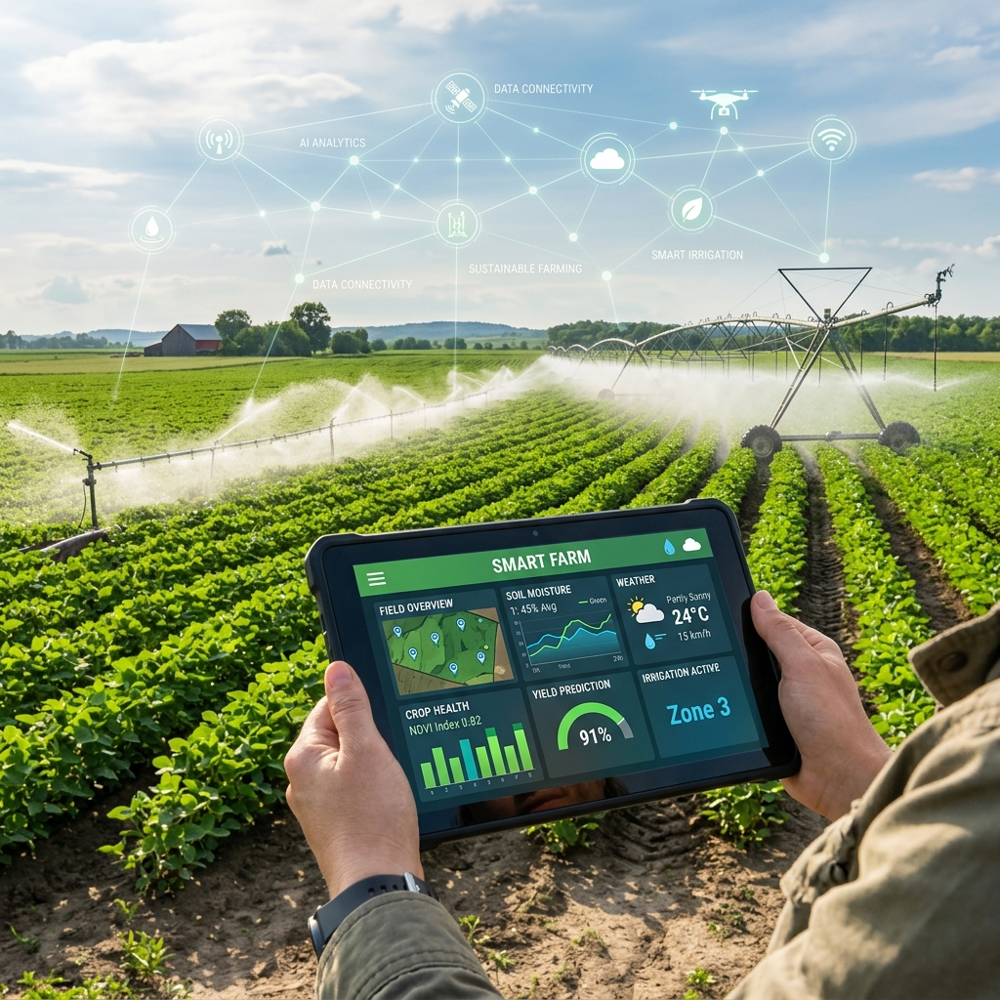
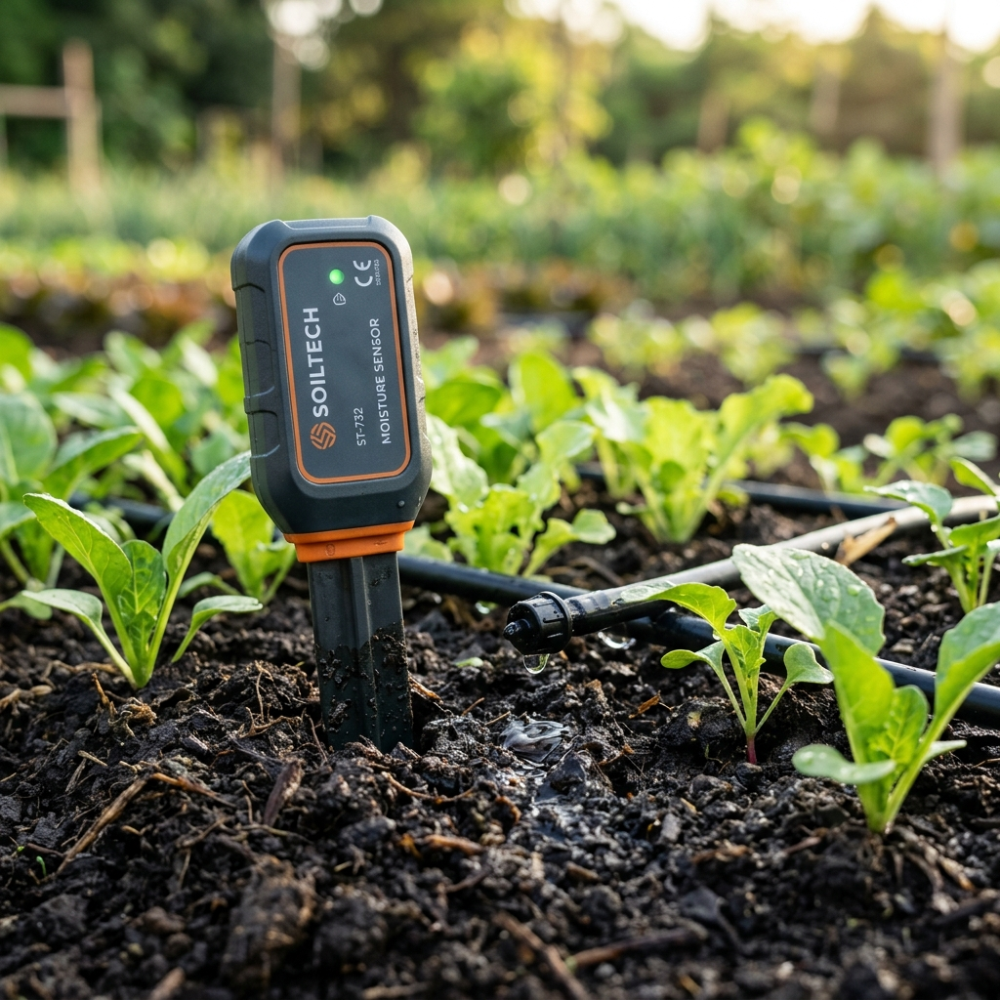

AgroGuard is a low-cost decision support platform empowering farmers with real-time sensor analytics, water conservation intelligence, and localized crop advisories.


Modern farming faces the critical challenges of freshwater scarcity, fluctuating soil health, and unpredictable climate patterns. AgroGuard bridges the gap by providing an affordable, localized IoT decision engine.
Our system utilizes sub-surface sensor arrays and cellular gateways to process soil moisture, weather predictions, and crop parameters. The data feeds directly into our recommendation algorithm, recommending actions that reduce water waste by up to 40%.
Explore how AgroGuard transforms raw environmental data into actionable agronomic insights.
Real-time volumetric water content telemetry prevents crop root drowning and prevents soil desiccation through smart thresholds.
Read MoreGenerates irrigation schedules dynamically, combining current ambient conditions with future precipitation forecast details.
Read MoreComputes holistic health index values for your plots based on multiple criteria: moisture levels, evaporation rates, and weather trends.
Read More